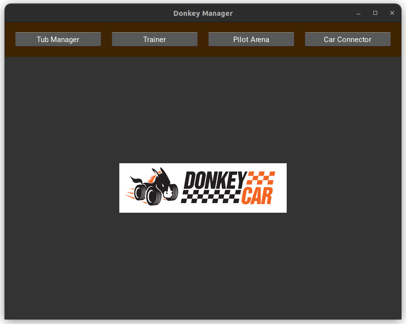
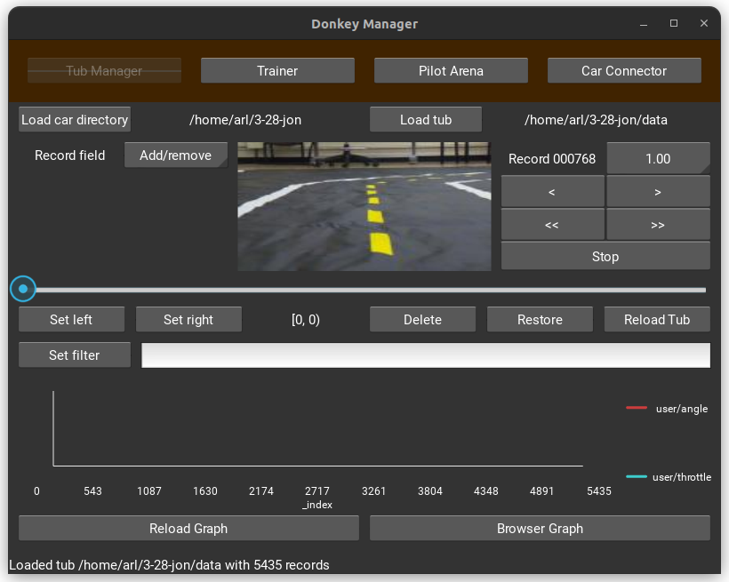
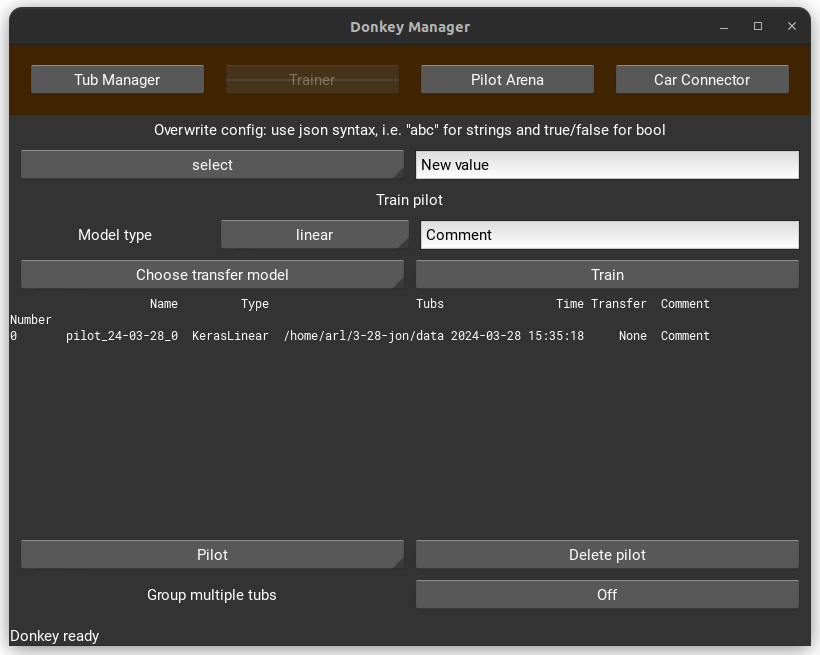

Training
Installing Donkey Car Software on the Host PC¶
In this module, we'll guide you through the process of setting up your computer to work with Donkey Car, a powerful suite of tools that let you dive into AI, computer science, and machine learning.
Option 1: Windows¶
We'll start by preparing your Windows computer to run Linux, a preferred operating system for many developers and AI enthusiasts. This is because Linux offers great support for programming and AI tools, including Donkey Car.
-
Enable Linux on Windows: We'll use something called the Windows Subsystem for Linux (WSL). This lets your Windows machine run Linux applications without needing a separate computer. Follow the instructions provided by Microsoft to install WSL. Just a heads-up, the graphical interface (GUI) of Donkey Car might not work perfectly with WSL, so we suggest using Ubuntu Linux directly if you can.
-
Check Your Graphics Card Drivers: If you're using an Nvidia graphics card, ensure you have the latest drivers installed. Drivers are software that lets your computer's hardware work properly. You can find and install the latest drivers from Nvidia's website.
Installing Ubuntu Linux on WSL¶
Ubuntu is a popular, user-friendly version of Linux. Installing it will let you run the Donkey Car software.
-
Get Ubuntu: Go to the Microsoft Store on your Windows computer and download "Ubuntu 22.04.3 LTS". LTS stands for Long Term Support, which means it gets updates for 5 years, making it a stable choice for your projects.
-
Set Up Ubuntu: Once Ubuntu is installed, launch the app. The first time you open it, it'll ask you to set up a few things like creating a username and a password. Remember these details as you'll need them later!
-
Update Ubuntu: Before we install the Donkey Car software, let's make sure your Ubuntu system is up-to-date. Open the Ubuntu terminal (a place where you type commands) and enter the following:
-
To update your list of available software:
sudo apt updateUpdate Packages Repositorysudo apt update -
To upgrade the software on your system:
sudo apt upgradeUpgrade Packagessudo apt upgrade
-
-
Install Necessary Software: Now, we'll install some programs that Donkey Car needs to run smoothly. Type these commands into the Ubuntu terminal:
-
For Python (the programming language we'll use):
sudo apt install python3-pipInstall Pip for Pythonsudo apt install python3-pip -
For other required tools:
sudo apt install libmtdev1 libgl1 xclipInstall Donkey Car Dependenciessudo apt install libmtdev1 libgl1 xclip -
To fix a common error with the graphical interface, add a line to a configuration file:
echo ‘LD_PRELOAD=/usr/lib/x86_64-linux-gnu/libstdc++.so.6’ >> ~/.bashrcUpdate Configuration Fileecho ‘LD_PRELOAD=/usr/lib/x86_64-linux-gnu/libstdc++.so.6’ >> ~/.bashrc
-
Next Steps¶
After you've completed these steps, you're ready to install the Donkey Car software itself. For that, please follow the instructions provided in the Ubuntu installation section of our curriculum.
Option 2: Ubuntu Linux¶
Step 1: Setting Up Your Computer with Ubuntu¶
-
What is Ubuntu? Ubuntu is a popular, user-friendly version of Linux, great for beginners and pros alike.
-
How to Install Ubuntu: Follow the instructions on the official Ubuntu website here. After installation, make sure your Ubuntu system is running smoothly.
Step 2: Updating Ubuntu¶
-
Why Update? Updating ensures your system has the latest features and security improvements.
-
How to Update:
-
Open the Terminal application in Ubuntu.
-
Type
sudo apt updateand press Enter to check for updates.Update Package Repositorysudo apt update -
Then, type
sudo apt upgradeand press Enter to apply the updates. Confirm if asked.Upgrade Packagessudo apt upgrade
-
Step 3: Installing MiniConda¶
-
What is MiniConda? MiniConda is a smaller version of Anaconda, a toolkit for scientific programming. It helps manage different versions of Python and packages.
-
Installation Steps:
-
Create a folder for MiniConda by typing "mkdir -p ~/miniconda3" in the Terminal.
-
Download MiniConda for Python 3.11 by running:
wget https://repo.anaconda.com/miniconda/Miniconda3-latest-Linux-x86_64.sh -O ~/miniconda3/miniconda.sh -
Install MiniConda with:
bash ~/miniconda3/miniconda.sh -b -u -p ~/miniconda3
-
-
Clean up the installer by running
rm -rf ~/miniconda3/miniconda.sh.
Install MiniConda for Linux and Python 3.11wget https://repo.anaconda.com/miniconda/Miniconda3-latest-Linux-x86_64.sh -O ~/miniconda3/miniconda.sh bash ~/miniconda3/miniconda.sh -b -u -p ~/miniconda3 rm -rf ~/miniconda3/miniconda.shStep 4: Creating a Conda Environment¶
-
-
What’s a Conda Environment? It's like a separate workspace for each project, with its own set of Python and packages, avoiding conflicts.
-
Creating Your Environment:
-
Choose a name for your environment; we'll use "donkey" here.
-
Create it with
conda create -n donkey python=3.11. -
Activate your new environment by typing
conda activate donkey.
Create Virtual Enviroment for the Donkey Car Projectconda create -n donkey python=3.11 conda activate donkey -
Step 5: Installing Donkey Car Software¶
-
About Donkey Car Software: This software suite allows you to control and customize your Donkey Car, a DIY autonomous driving project.
-
Installation:
-
For a standard user installation, type
pip install donkeycar[pc]in the Terminal.Install Donkey Car Softwarepip install donkeycar[pc]
-
-
Updating Existing Installation:
-
If you've installed it before and need an update:
-
Update Conda with
conda update -n base -c defaults conda. -
Remove the old environment with
conda env remove -n donkey. -
Reinstall the Donkey Car software as described above.
Update Previous Installationconda update -n base -c defaults conda conda env remove -n donkey -
-
Step 6: Additional Tools (Optional)¶
-
Choosing Between PyTorch and TensorFlow: If you prefer using PyTorch over TensorFlow for your projects:
-
Install PyTorch and its necessary toolkit with
conda install cudatoolkit=11 -c pytorch.Install Pytorchconda install cudatoolkit=11 -c pytorch
-
Note: For those interested in more advanced setups or contributing to the Donkey Car software, see Appendix 2 for developer installation instructions.
Preparing for Training: Gathering Data from Your Donkey Car¶
To train your artificial intelligence (AI) model, we need specific files from your Donkey Car—a miniature car powered by a Raspberry Pi (a small, affordable computer). These files include images (what the car sees), metadata (information about the images), and configuration settings. We'll transfer these files from the Donkey Car to a larger computer (we'll call this the "Host PC") where the training will happen.
Step 1: Ensure Both Devices Can Communicate¶
-
Connect both the Donkey Car and the Host PC to the same Wi-Fi network. This could be your home network or any mobile hotspot. This step is crucial for the two devices to 'talk' to each other.
- If you're unsure how to do this, refer to the "Networking" section of our materials for a step-by-step guide.
Step 2: Check the Connection¶
-
On your Host PC, open a program called 'Terminal'. Think of the Terminal as a way to talk to your computer using text commands instead of clicking on icons.
-
Type the command
ping <hostname>.localand press Enter.-
Replace
<hostname>with the name of your Raspberry Pi. This command checks if your Host PC can communicate with the Donkey Car. -
If you see replies coming back, congrats! Your PC and the Donkey Car are on speaking terms.
-
Step 3: Prepare to Transfer Files¶
-
In the Terminal, type
mkdir <dest_dir>and press Enter.- This command creates a new folder on your Host PC where we'll
save the Donkey Car's files. You can replace
<dest_dir>with any name you like for your folder.
- This command creates a new folder on your Host PC where we'll
save the Donkey Car's files. You can replace
Step 4: Transfer the Files¶
-
Now, type the command
rsync -rv --progress --partial <userrname>@<hostname>.local:<car_dir> <dest_dir>and press Enter.-
Here, you'll replace
<userrname>with the username of your Raspberry Pi,<hostname>with its hostname, and<car_dir>with the path to the Donkey Car project folder (usually it's~/mycar). -
This command may look complex, but it's essentially instructing your computer to carefully copy all the necessary files from the Donkey Car into the folder you just created.
Transfer Files from the Pi to the Host PCrsync -rv --progress --partial <userrname>@<hostname>.local:<car_dir> <dest_dir> -
Step 5: Confirm Success¶
- If everything went smoothly and you didn't see any error messages, all the files needed to train your AI model are now on your Host PC.
Cleaning the Training Data¶
To ensure our AI models learn effectively and quickly, preparing our training data is crucial. Properly prepared data improves the model's learning efficiency and its eventual performance and accuracy. Preparing the data involves removing irrelevant or problematic elements such as images and metadata that don't contribute to the learning objective, are captured during non-active moments (like breaks), or are simply errors.
Methodologies for Data Preparation: There are two main ways to prepare your data:
Option 1: Graphic Interface (GUI)¶
For those preferring a visual approach, utilizing the GUI is recommended. This method is particularly effective when working directly on a Ubuntu system. Working on Windows via the Windows Subsystem for Linux (WSL) might not offer the same smooth experience.
- How to Use the GUI: For detailed steps on using the GUI for data cleaning, please refer to Appendix 1 of this curriculum.
Option 2: Using the Command Line and Web Interface¶
For individuals comfortable with command line operations, the Donkey Car Software provides tools for data cleaning through a command line and web interface process. Here's how to do it:
-
Step 1: Open the terminal on your computer and execute the command to clean your data. Type:
donkey tubclean <Donkey Car folder>followed by the path to your Donkey Car project folder. Remember to replace<Donkey Car folder>with the actual path to your project folder.Open Tubclean Web Serverdonkey tubclean <Donkey Car folder> -
Step 2: This command sets up a local web server accessible through your browser. Open your preferred web browser and visit
http://localhost:8886. -
Step 3: Navigate to the data folder by clicking on
data/. You'll see an interface where you can review your images. -
Step 4: In this interface, you can play through your images, organize them into different categories or tracks, and delete any that aren't needed.
-
Step 5: After you've selected and deleted unnecessary images, return to the terminal and press Ctrl+C to stop the web server and conclude the data cleaning process.
Remember, taking the time to prepare your data properly can significantly impact the success of your AI project. Choose the method that best suits your setup and preferences.
Training the Model¶
After preparing our data by cleaning it, we're ready to take the next exciting step: training our artificial intelligence (AI) model. This process teaches the AI how to make decisions based on the data we've given it. We can use two methods to train our model, depending on what's more comfortable for you: using a graphical user interface (GUI) or typing commands into the command line.
Option 1: Using the GUI (Graphical User Interface)¶
The GUI is a visual tool that lets you interact with the computer more intuitively. Here’s how you can use it to train your model:
  
-
Start the Tool:
- On the computer that controls the process, called the Host computer, open the tool by typing Donkey UI into the command prompt.
-
Prepare Your Data:
-
In the tool, find and click on the ‘Tub Manager’ menu.
-
Choose “Load car directory” and navigate to your car’s data directory.
-
Click “Load Tub” and select the “data” folder within that directory.
-
-
Train Your Model:
-
Go to the “Trainer” tab.
-
Click on “Train” and wait patiently for the training to complete.
-
-
Customizing Your Training:
-
If you wish to change the type of AI model you're training, you can select a different model type from the “Model Type” dropdown menu.
-
To tweak the training process, such as how fast the AI learns, modify the “Training” section in the myconfig.py file.
-
You can label your model with a comment for easy identification later on.
-
Option 2: Using the Command Line¶
If you're more comfortable with typing commands, this method is for you:
-
Open the Terminal:
- On the Host computer, open the command terminal.
-
Type the Training Command:
-
Enter the following command, replacing placeholders with your specific information:
-
donkey train --tub=<path_to_your_data> [--config=<configuration_file>] [--model=<path_to_save_model>] [--type=<model_type>] [--transfer=<path_to_pretrained_model>]-
--tubspecifies the location of your data. You can list multiple locations by separating them with commas or spaces. -
--config(optional) allows you to use a specific configuration file. -
--model(optional) sets where to save the trained model. If you don't specify a name, one will be automatically generated. -
--typelets you choose the type of model to train. -
--transfer(optional) continues training an already partially trained model. -
You can also filter which data records to use for training by adjusting settings in the
myconfig.pyfile.
-
Train a modeldonkey train --tub=<path_to_your_data> [--config=<configuration_file>] [--model=<path_to_save_model>] [--type=<model_type>] [--transfer=<path_to_pretrained_model>] -
-
-
Completion:
- Once the command is executed, the system will train the model using your data. Wait until this process is complete.
What's Next?¶
After training your model, you're ready to upload it to the Donkey Car for autonomous driving tests. This step will allow you to see how well your AI has learned to make decisions on its own. Remember, the goal here is to teach the AI to navigate a course independently, improving over time as it learns from more data.